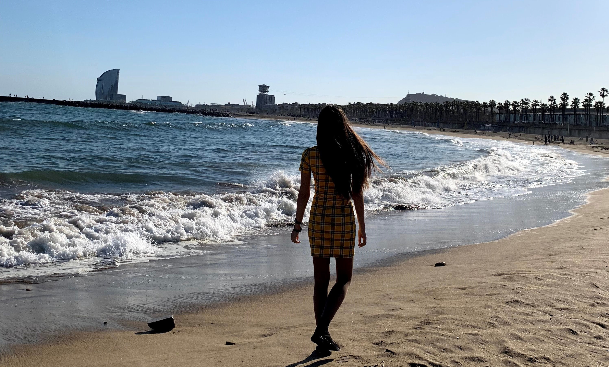

Barcelona
Atracții
Topul obiectivelor turistice din Barcelona
1.Sagrada Familia
In orice top al atractiilor din Barcelona, vei gasi pe primul loc Sagrada Familia, proiectata de Antoni Gaudi, dar neterminata. Piatra de temelie a fost pusa in 1882. Interiorul Sagradei Familia s-a deschis complet in 2012 si merita vizitat pentru detaliile impresionante. Exteriorul este inca inca in constructie si in prezent este in jur de 75% completat, cu doar 8 din cele 18 turnuri finalizate. Se doreste finalizarea lucrarii in anul 2026 pentru a marca aniversarea a 100 de ani de la moartea lui Gaudi. Daca vrei sa vizitezi catedrala, pregateste-te sa stai la coada circa o ora si jumatate. Recomandarea noastra este sa cumperi biletele de pe internet in avans ca sa sari coada la casa de bilete.

2.Fantana de la Montjuic
Fantana de la Montjuic este intr-adevar magica, datorita spectacolului ei de lumini, muzica si efecte vizuale. A fost construita in 1929 si este inca unul dintre cele mai renumite locuri din Barcelona, cu aproximativ 2,5 milioane de vizitatori anual. In timpul iernii, fantana ofera spectacole doar vinerea si sambata. Vara, seara de lumini si muzica tine de joi pana duminica. Intregul show este gratuit, dar in sezonul turistic locul poate deveni extrem de aglomerat.

3.Plaja Barceloneta
Situata pe coasta cartierului cu acelasi nume, plaja La Barceloneta este intotdeauna plina de turisti. Ei nu trebuie sa se rezume la inot, ci pot experimenta o varietate de sporturi de apa extreme - windsurfing si kite-surfing fiind optiunile cele mai populare. Ce este grozav in Barcelona este ca te poti bucura si de plaja si de munte in acelasi oras. Poti merge in drumetie pe Tibidabo, muntele ce depaseste cu putin 500 de metri altitudine. Acolo vei gasi nu doar o catedrala impunatoare, Expiatori del Sagrat Cor, dar si un parc de distractii.
